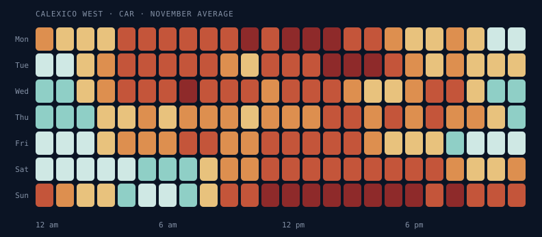

Software Engineer II · Arizona
Turning data pipelines into production-ready software.
Two decades building enterprise applications, data platforms, and automation across Mexico and the United States — from public-sector IT and ERP integration to mission operations and cloud analytics. Today I partner with data scientists to take models and pipelines into production.
- Python
- SQL
- C# · .NET
- Java · Jakarta EE
- R
- Power BI
- Azure DevOps
- Snowflake
- PHP
- JavaScript
- MLOps
- Generative AI
01 Career path
Experience
Six chapters, from public-sector IT in Mexicali to production AI in Arizona. Each one is paired with a runnable demonstration.
02 Hands-on work
Selected projects
Sixteen demonstrations built on simulated data. Each includes source code, sample data, and instructions to run it.
03 Continuous learning
Learning record
Every course completed on LinkedIn Learning since 2019, organized by skill area and connected to the projects where I applied it.
Completed per year
2019 – todaySkill areas
Select to exploreComplete history
| Course | Skill area | Completed |
|---|
Source: LinkedIn Learning history · Download full list (CSV)
04 Learning in public
Daily Data Lab
One small interactive visualization a day, each on a different everyday topic, built with React and public data.
Day 001 · Mobility · Live data
When is the best time to cross from Mexicali?
Live and historical wait times at the Calexico ports of entry: a weekday-by-hour heatmap, today compared with a typical day, and the busiest months of the year.

05 Contact
Let's build something reliable together.
Open to conversations about data platforms, production analytics, and AI engineering.